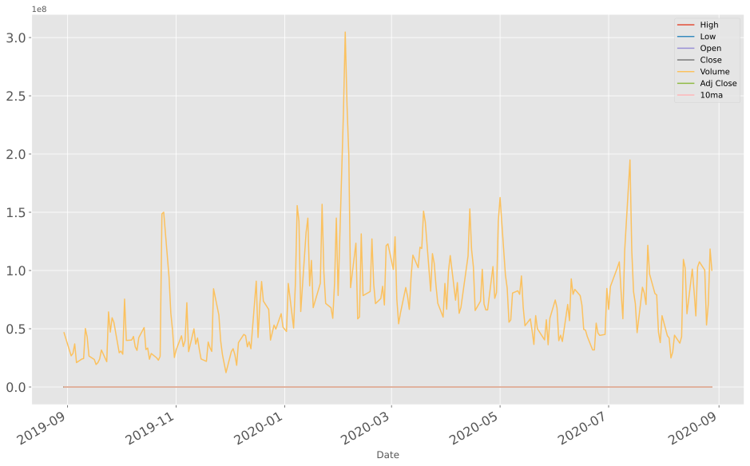
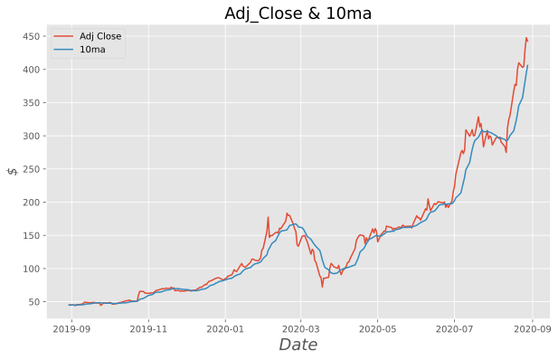
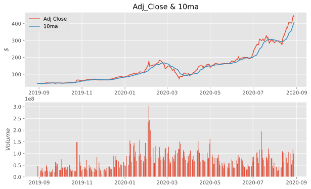
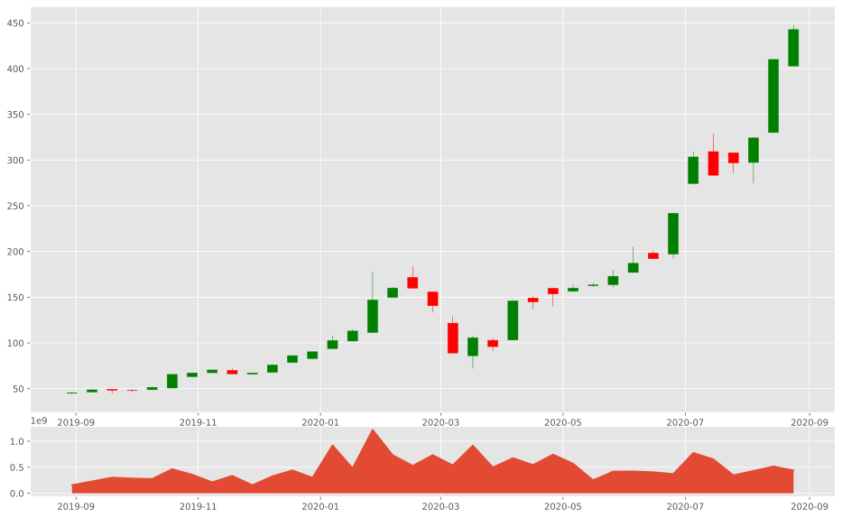
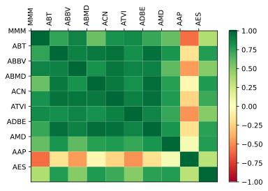
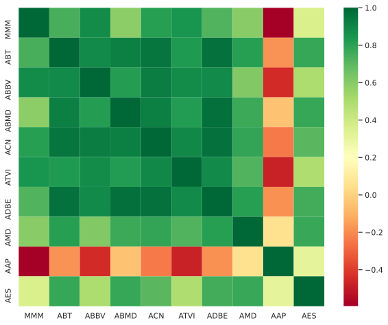

【Python学习】股票分析系列（中文自制） by 大力牛肉粉
东方财富网资金流向
Convert curl syntax to Python, Ansible URI, MATLAB, Node.js, R, PHP, Strest, Go, Dart, JSON, Elixir, Rust
1 2 3 4 5 6 7 8 9 %matplotlib inline import datetime as dtimport pandas as pdimport numpy as npimport pandas_datareader as pdr import matplotlib.pyplot as pltfrom matplotlib import style
获取数据
1 2 3 4 5 6 7 start = dt.datetime(2019 , 8 , 30 ) end = dt.datetime(2020 , 8 , 30 ) df = pdr.get_data_yahoo("TSLA" , start, end) df.to_csv("tsla.csv" ) df = pd.read_csv("tsla.csv" , parse_dates=True , index_col=0 )
1 2 3 style.use("ggplot" ) df.plot(figsize=(16 ,10 ),fontsize=16 )
<AxesSubplot:xlabel='Date'>
svg
十日均线
1 2 3 df = pd.read_csv("tsla.csv" , parse_dates=True , index_col=0 ) df["10ma" ] = df["Adj Close" ].rolling(window=10 , min_periods=0 ).mean() df.head()
High
Low
Open
Close
Volume
Adj Close
10ma
Date
2019-08-30
46.487999
44.841999
45.830002
45.122002
46603000.0
45.122002
45.122002
2019-09-03
45.790001
44.632000
44.816002
45.001999
26770500.0
45.001999
45.062000
2019-09-04
45.692001
43.841999
45.377998
44.136002
28805000.0
44.136002
44.753334
2019-09-05
45.959999
44.169998
44.500000
45.916000
36976500.0
45.916000
45.044001
2019-09-06
45.928001
45.034000
45.439999
45.490002
20947000.0
45.490002
45.133201
ax和subplot
1 2 3 4 5 6 7 8 9 10 11 12 13 14 15 16 17 18 plt.rcParams['font.sans-serif' ] = ['SimHei' ] fig, ax = plt.subplots(figsize=(10 ,6 )) ax.plot(df.index, df["Adj Close" ]) ax.plot(df.index, df["10ma" ]) ax.legend(["Adj Close" , "10ma" ]) ax.set_title("Adj_Close & 10ma" , fontsize=18 ) ax.set_xlabel("Date" , fontsize=18 , fontfamily = 'DejaVu Sans' , fontstyle="italic" ) ax.set_ylabel("$" , fontsize = "x-large" , fontstyle="oblique" ) ax.grid(which="minor" , axis="both" ) plt.show()
svg
1 2 3 4 5 6 7 8 9 10 11 12 13 14 15 16 17 fig, axs = plt.subplots(2 , figsize=(10 ,6 )) ax = axs[0 ] ax2 = axs[1 ] ax.plot(df.index, df["Adj Close" ]) ax.plot(df.index, df["10ma" ]) ax.legend(["Adj Close" , "10ma" ]) ax.set_title("Adj_Close & 10ma" ) ax.set_ylabel("$" , fontstyle="oblique" ) ax2.bar(df.index, df["Volume" ]) ax2.set_ylabel("Volume" , fontstyle="oblique" ) style.use("ggplot" ) plt.show()
svg
蜡烛图
1 2 import matplotlib.dates as mdatesfrom mpl_finance import candlestick_ohlc
1 2 3 4 5 df = pd.read_csv("tsla.csv" , parse_dates=True , index_col=0 ) df_ohlc = df["Adj Close" ].resample("10D" ).ohlc() df_volume = df["Volume" ].resample("10D" ).sum() df_ohlc.reset_index(inplace=True ) df_ohlc.Date = df_ohlc.Date.map(mdates.date2num)
1 2 3 4 5 6 7 8 9 10 11 12 fig = plt.figure(figsize=(16 ,10 )) ax1 = plt.subplot2grid((6 ,1 ), (0 ,0 ), rowspan=5 , colspan=1 ) ax2 = plt.subplot2grid((6 ,1 ), (5 ,0 ), rowspan=1 , colspan=1 , sharex = ax1) ax1.xaxis_date() candlestick_ohlc(ax1, df_ohlc.values, width=5 , colorup='g' ) ax2.fill_between(df_volume.index.map(mdates.date2num), df_volume.values, 0 ) ax2.plot(df_volume) style.use("ggplot" ) plt.show()
svg
标普500公司简称获取(爬虫)
1 2 3 from bs4 import BeautifulSoup as bs import pickle import requests
1 2 3 4 5 6 7 8 9 10 11 12 13 14 def save_sp500_tickers (): resp = requests.get("https://en.wikipedia.org/wiki/List_of_S%26P_500_companies" ) soup = bs(resp.text, "lxml" ) table = soup.find("table" , {"class" :"wikitable sortable" }) tickers = [] for row in table.findAll('tr' )[1 :]: ticker = row.findAll('td' )[0 ].text.replace("\n" , "" ) tickers.append(ticker) with open("sp500tickers.pickle" ,"wb" ) as f: pickle.dump(tickers, f) return tickers
下载SP500股票数据
1 2 3 4 5 import os import pandas as pd import pandas_datareader as pdrimport datetime as dt
1 2 3 4 5 6 7 8 9 10 11 12 13 14 15 16 17 18 19 20 21 22 23 24 25 def get_data_from_yahoo (isReload=False ): if isReload: tickers = save_sp500_tickers() else : with open("sp500tickers.pickle" ,"rb" ) as f: tickers = pickle.load(f) if not os.path.exists("stock_dfs" ): os.makedirs("stock_dfs" ) start = dt.datetime(2016 , 1 , 1 ) end = dt.datetime(2019 , 1 , 1 ) for ticker in tickers: if not os.path.exists("stock_dfs/{}.csv" .format(ticker)): try : df = pdr.get_data_yahoo(ticker, start, end) df.to_csv("stock_dfs/{}.csv" .format(ticker)) print("Download complete: {}" .format(ticker)) except : continue else : print("Already exist: {}" .format(ticker)) get_data_from_yahoo(True )
整合数据
1 2 3 4 5 6 7 8 9 10 11 12 13 14 15 16 17 18 19 20 21 22 23 24 def compile_data (): with open("sp500tickers.pickle" ,'rb' ) as f: tickers = pickle.load(f)[:10 ] main_df = pd.DataFrame() for count, ticker in enumerate(tickers): df = pd.read_csv("stock_dfs/{}.csv" .format(ticker)) df.set_index("Date" , inplace=True ) df.rename(columns = {"Adj Close" : ticker}, inplace=True ) df.drop(["Open" , "High" , "Low" , "Close" , "Volume" ], axis=1 , inplace=True ) if main_df.empty: main_df = df else : main_df = main_df.join(df, how="left" ) print(count) if count == 10 : break main_df.to_csv("sp500_joined.csv" ) return main_df main_df = compile_data()
0
1
2
3
4
5
6
7
8
9
MMM
ABT
ABBV
ABMD
ACN
ATVI
ADBE
AMD
AAP
AES
Date
2016-01-04
128.033249
39.050327
46.141216
85.239998
93.774796
36.365803
91.970001
2.770000
150.250793
7.769172
2016-01-05
128.591339
39.041222
45.948997
85.000000
94.262863
35.901806
92.339996
2.750000
149.224380
7.876278
2016-01-06
126.001358
38.713760
45.956993
85.300003
94.078682
35.563477
91.019997
2.510000
145.276642
7.604397
2016-01-07
122.931786
37.785950
45.820843
81.919998
91.316017
35.060810
89.110001
2.280000
146.885345
7.414905
2016-01-08
122.513206
36.994564
44.571400
84.580002
90.431938
34.519478
87.849998
2.140000
143.658066
7.522010
...
...
...
...
...
...
...
...
...
...
...
2018-12-24
168.035690
63.701054
75.395958
281.079987
130.427887
43.354313
205.160004
16.650000
147.761047
13.031178
2018-12-26
175.222961
67.645943
79.767776
307.440002
135.638382
45.749195
222.949997
17.900000
153.823486
13.464924
2018-12-27
179.399902
68.627304
80.547180
315.670013
137.004425
46.360237
225.139999
17.490000
153.486160
13.474353
2018-12-28
178.148697
69.074249
81.631172
318.170013
136.428741
46.123703
223.130005
17.820000
154.250168
13.455495
2018-12-31
179.249359
70.279106
82.589752
325.040009
137.589874
45.897026
226.240005
18.459999
156.234573
13.634648
754 rows × 10 columns
数据可视化
1 2 3 4 5 6 7 8 9 10 11 12 13 14 15 16 17 18 19 20 21 22 23 24 25 26 def visualize_data (): df = pd.read_csv("sp500_joined.csv" ) df_corr = df.corr() df_corr.to_csv("sp500corr.csv" ) data1 = df_corr.values fig1 = plt.figure() ax1 = fig1.add_subplot(111 ) heatmap1 = ax1.pcolor(data1, cmap=plt.cm.RdYlGn) fig1.colorbar(heatmap1) ax1.set_xticks(np.arange(data1.shape[1 ])) ax1.set_yticks(np.arange(data1.shape[0 ])) ax1.invert_yaxis() ax1.xaxis.tick_top() column_labels = df_corr.columns row_labels = df_corr.index ax1.set_xticklabels(column_labels) ax1.set_yticklabels(row_labels) plt.xticks(rotation=90 ) heatmap1.set_clim(-1 ,1 ) visualize_data()
svg
1 2 3 4 5 6 7 8 9 10 11 12 13 def visualize_data (): df = pd.read_csv("sp500_joined.csv" ) df_corr = df.corr() df_corr.to_csv("sp500corr.csv" ) f, axes = plt.subplots(1 , figsize=(10 ,8 )) sns.despine(left=True ) sns.heatmap(df_corr, cmap= "RdYlGn" , cbar=True ) visualize_data()
svg
获取7日内股价波动
1 2 3 4 5 6 7 8 9 def process_data_for_labels (ticker ): hm_days = 7 df = pd.read_csv("sp500_joined.csv" , index_col=0 ) tickers = df.columns.values.tolist() df.fillna(0 , inplace=True ) for i in range(1 , hm_days+1 ): df["{}_{}d" .format(ticker, i)] = (df[ticker].shift(-i)-df[ticker])/df[ticker] df.fillna(0 , inplace=True ) return tickers, df
1 2 3 4 5 6 7 8 9 10 11 def buy_sell_hold (*args ): cols = [c for c in args] requirement = 0.02 for col in cols: if col > requirement: return 1 elif col < -requirement: return -1 else : return 0
获取特征集合
1 from collections import Counter
1 2 3 4 5 6 7 8 9 10 11 12 13 14 15 16 17 18 19 20 21 22 23 24 25 26 27 28 29 def extract_featuresets (ticker ): tickers, df = process_data_for_labels(ticker) df["{}_target" .format(ticker)] = list(map(buy_sell_hold, df["{}_1d" .format(ticker)], df["{}_2d" .format(ticker)], df["{}_3d" .format(ticker)], df["{}_4d" .format(ticker)], df["{}_5d" .format(ticker)], df["{}_6d" .format(ticker)], df["{}_7d" .format(ticker)], )) vals = df["{}_target" .format(ticker)].values.tolist() str_vals = [str(i) for i in vals] df.fillna(0 , inplace=True ) df.replace([np.inf, -np.inf], np.nan, inplace=True ) df.dropna(inplace=True ) df_vals = df[[t for t in tickers]].pct_change() df_vals.replace([np.inf, -np.inf], np.nan) df_vals.fillna(0 , inplace=True ) X = df_vals.values y = df[f"{ticker} _target" ].values return X, y, df
机器学习
1 X, y, _ = extract_featuresets("MMM" )
1 2 3 from sklearn.model_selection import train_test_splitfrom sklearn import svm, neighbors from sklearn.ensemble import VotingClassifier, RandomForestClassifier
1 2 def do_ml (ticker ): X,y,df